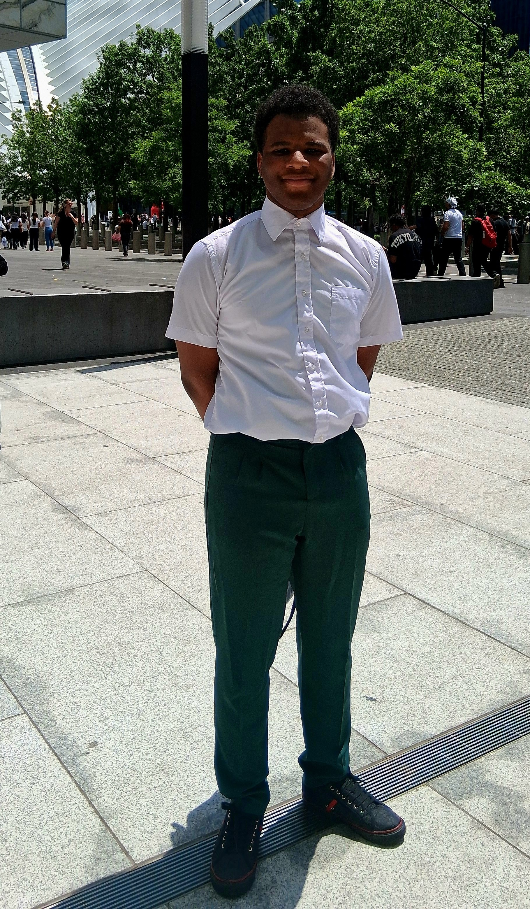

✯Portfolios!!✯
Welcome to my older portfolios section where you can look at and go through my older projects and portfolios. Keep in mind these are older and they show my growth over my 3 years of learning programing and prototyping. Also there might be some kinks in them. But they are something that should also be admired for my efforts.